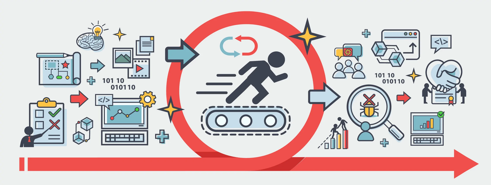
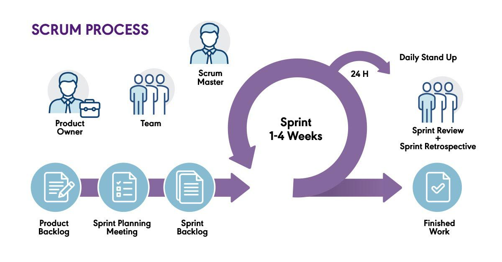

Desarrollo Ágil de Software
El desarrollo ágil es un enfoque flexible e iterativo para la creación de software que prioriza la colaboración, la adaptación a los cambios y la entrega de valor al cliente. Se basa en el Manifiesto Ágil, que establece cuatro valores fundamentales:
- Individuos e interacciones sobre procesos y herramientas.
- Software funcionando sobre documentación extensiva.
- Colaboración con el cliente sobre negociación de contratos.
- Respuesta ante el cambio sobre seguir un plan rígido.

Además, se apoya en 12 principios, entre los que destacan:
- Entrega frecuente de software funcional.
- Cooperación entre equipos de desarrollo y negocio.
- Capacidad de adaptación a cambios en los requisitos del proyecto.
Scrum: Un Marco de Trabajo Ágil
Dentro de las metodologías ágiles, Scrum Es un marco ampliamente utilizado para la gestión de proyectos. Se basa en ciclos iterativos llamados sprints, que suelen durar entre una y cuatro semanas.
Antes de cada sprint, el equipo trabaja con el Product Backlog (Backlog del Producto), una lista priorizada de todas las funcionalidades, mejoras y correcciones necesarias para el proyecto. De este backlog se seleccionan los elementos más importantes que serán abordados en el sprint.
Cada sprint comienza con una planificación, donde se define el Sprint Backlog (Backlog del Sprint), que es el conjunto específico de tareas y objetivos seleccionados del backlog del producto para ser desarrollados durante ese sprint. Luego, se sigue con la fase de desarrollo, revisión y retrospectiva para mejorar en el siguiente ciclo.

Roles en Scrum
- Product Owner (Dueño del Producto): Define los objetivos del producto, prioriza el backlog y se asegura de que el equipo entregue valor al negocio.
- Scrum Master: Facilita el proceso, elimina obstáculos y ayuda al equipo a seguir las prácticas ágiles.
- Development Team (Equipo de Desarrollo): Grupo autoorganizado y multidisciplinario que implementa las tareas definidas en el sprint.
Eventos Claves en Scrum
- Sprint Planning: Se planifican los objetivos y tareas del sprint.
- Daily Scrum: Reunión diaria corta donde el equipo revisa avances y obstáculos.
- Sprint Review: Al final del sprint, se presenta el trabajo realizado.
- Sprint Retrospective: Se analizan mejoras para aplicar en el siguiente sprint.
Scrum permite una entrega incremental de software funcional, promoviendo la transparencia, inspección y adaptación continua.